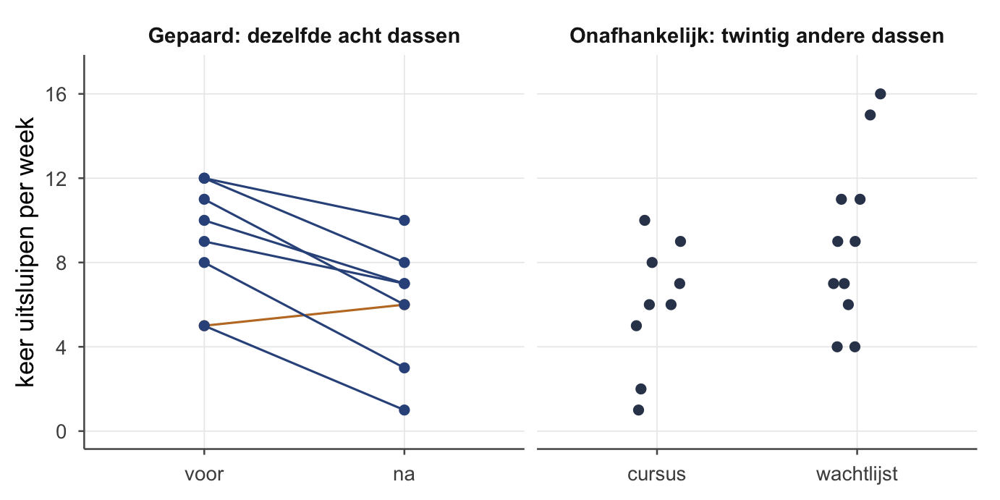
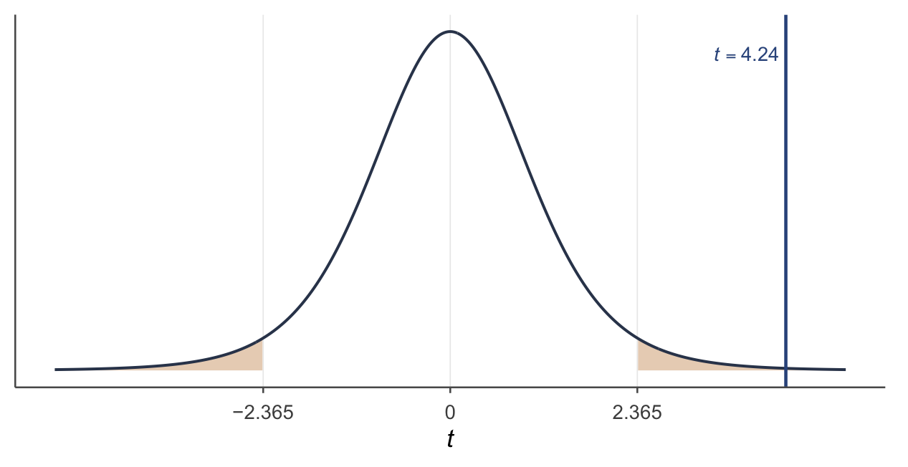

Thema 1 · t-toetsen: gepaard en onafhankelijk
Deel 1 · Twee groepen · dezelfde dassen, of andere dassen?
Acht dassen die niet willen slapen
Elke avond hetzelfde liedje in het dassenbos. Het licht gaat uit, de jonge das ligt erin, en tien minuten later steekt hij zijn snuit alweer buiten het hol. De dassenouders zijn het zat en schrijven zich in voor een cursus: Rustig naar bed.
Werkt die cursus? Daar zijn twee manieren om achter te komen, en het hele thema draait om het verschil tussen die twee.
Wat je al kent
Uit OZP 1 ken je de t-toets al, en de gedachte erachter verandert in dit thema niet:
Een verschil, gedeeld door het lineaaltje: hoe vaak past de standaardfout tussen wat je vond en wat je onder had verwacht? Ruw is ruk — een verschil van 3 zegt je niks totdat je weet hoeveel het normaal schommelt.
Je kent er al twee:
- de één-steekproefs t-toets — één gemiddelde tegen een norm;
- de onafhankelijke t-toets — twee groepen met verschillende mensen.
Nieuw is de derde, de gepaarde t-toets: dezelfde mensen, twee keer gemeten. Hij blijkt minder nieuw dan je denkt.
Dezelfde dassen, of andere dassen?
Terug naar de cursus. Je kunt het op twee manieren onderzoeken.
Manier 1. Je neemt acht jonge dassen. Je telt een week lang hoe vaak elk jong ’s avonds uitsluipt, de ouders volgen de cursus, en daarna tel je nog een week. Elke das levert twee scores: één vóór, één na.
Manier 2. Je neemt twintig jonge dassen. Bij negen volgen de ouders de cursus, de andere elf komen op de wachtlijst. Na afloop tel je bij allemaal één week. Elke das levert één score, en zit in één groep.
Dat zijn de twee designs:
- Within-subjects design (manier 1): alle deelnemers doorlopen alle condities. Een voormeting en een nameting is het schoolvoorbeeld. De vergelijking vindt plaats binnen elke das.
- Between-subjects design (manier 2): elke deelnemer zit in één conditie. De vergelijking vindt plaats tussen groepen met verschillende dassen.
Je hoeft maar één vraag te stellen: krijgt elke score een partner? Bij manier 1 wel: de vóór-score van das 4 hoort bij de na-score van díé das, en bij geen ander. Bij manier 2 heeft de score van de derde das in de cursusgroep niets te maken met de score van de derde das op de wachtlijst. Dat ze allebei “de derde” zijn, is toeval van de volgorde in je bestand.
Het hoeft niet eens twee keer dezelfde das te zijn. Wil je weten of meisjes gelukkiger zijn dan jongens, dan kun je telkens een meisje vergelijken met haar eigen broer uit hetzelfde gezin — dan hebben ze een vergelijkbare thuissituatie. Ook dan krijgt elke score een partner, en dan is het gepaard. Dat heet matched pairs, of een matched-subjects design.
Twee keer afhankelijk
Hier struikelt bijna iedereen een keer. Het woord afhankelijk betekent in statistiek twee dingen die niks met elkaar te maken hebben:
- de afhankelijke variabele — de uitkomst, wat je meet (hier: uitsluipen per week);
- afhankelijke groepen of afhankelijke metingen — de twee reeksen scores hangen aan elkaar, omdat het dezelfde dassen zijn.
Weet je iets over hoe vaak das 4 vóór de cursus uitsloop, dan weet je al iets over na: een das die graag op pad gaat, doet dat vóór en na vaker dan de rest. Niet even vaak — maar wel gecorreleerd. Een ander woord voor afhankelijke groepen is daarom gepaard.
En de toets heeft nog veel meer namen, die allemaal hetzelfde betekenen: gepaarde t-toets, paired samples t-test, dependent samples t-test, within-subjects t-test, repeated measures t-test, en in je boek matched pairs t procedures. Laat je er op een meerkeuzevraag niet door afleiden.
Waarom je within zou willen — en waarom niet
Voordelen van within:
- Meer power. Elke das is zijn eigen controle; de verschillen tussen dassen tellen niet meer mee. Hoeveel dat scheelt, zie je verderop met precies dezelfde getallen.
- Minder deelnemers nodig. Acht dassen leveren zestien scores.
Nadelen van within — volgorde-effecten:
- oefening — de tweede keer gaat een taak beter, alleen omdat je hem al eens deed;
- vermoeidheid — de tweede keer gaat het slechter, omdat je moe of verveeld bent;
- sensitisatie — de eerste meting zet je op het spoor van waar het onderzoek over gaat.
De oplossing heet counterbalancing: de helft krijgt eerst conditie A en dan B, de andere helft andersom. Bij een voor- en nameting kan dat niet — de cursus kun je niet “ont-volgen” — en daar zit dan een echte zwakte: misschien slapen jonge dassen na een paar weken sowieso beter, cursus of niet.
De gepaarde t-toets met de hand
Hier is de truc, en die maakt het hele hoofdstuk makkelijk: reken per das het verschil uit, en vergeet daarna de ruwe scores. Wat overblijft is één rijtje getallen — de verschilscores — en daarop doe je een gewone één-steekproefs t-toets tegen 0. Meer is het niet.
We nemen het verschil als vóór min na, zodat een positief getal betekent: na de cursus sloop hij minder vaak uit.
| das | vóór | na | |||
|---|---|---|---|---|---|
| 1 | 12 | 10 | 2 | -1 | 1 |
| 2 | 9 | 7 | 2 | -1 | 1 |
| 3 | 5 | 6 | -1 | -4 | 16 |
| 4 | 11 | 6 | 5 | 2 | 4 |
| 5 | 8 | 3 | 5 | 2 | 4 |
| 6 | 12 | 8 | 4 | 1 | 1 |
| 7 | 5 | 1 | 4 | 1 | 1 |
| 8 | 10 | 7 | 3 | 0 | 0 |
| som | 24 | 0 | 28 |
Twee dingen om op te letten in die tabel. De kolom telt op tot 0, zoals afwijkingen van een gemiddelde altijd doen — een handige controle. En das 3 heeft een negatief verschil: die sloop na de cursus juist vaker uit. Die laat je gewoon staan; het minteken telt mee.
Uit de tabel:
Het toetsingsschema in zeven stappen
Het college werkt met zeven stappen. Je kent ze uit OZP 1; daar was de situatieschets nog een eigen stap, hier hoort hij bij de eerste.
Stap 1 · Onderzoeksvraag (en schets). Verandert het gemiddeld aantal keer uitsluipen per week bij jonge dassen als hun ouders de cursus volgen? De schets komt bij stap 5.
Stap 2 · Hypothesen. Over het gemiddelde verschil in de populatie, :
Tweezijdig, want de vraag is óf het verandert, niet welke kant op. (In OZP 1 heette die tweede : zelfde hypothese, andere letter. Dit boek schrijft , zoals de collegesheets.)
Stap 3 · Toetskeuze. Within-subjects: dezelfde dassen, vóór en na. De uitkomst is een telling met echte getallen, dus minstens intervalniveau. Dat wordt de gepaarde t-toets, met . Hij gaat ervan uit dat de verschilscores in de populatie ongeveer normaal verdeeld zijn; wat je doet als dat niet zo is, staat in thema 2.
Stap 4 · Toetsstatistiek. Het getal waarmee je toetst; in OZP 1 heette het de toetsingsgrootheid, en dat is hetzelfde. Eerst de standaardfout van , dan delen:
Stap 5 · p-waarde aflezen. Eerst de schets. Als waar is, schommelt rond 0 volgens de t-verdeling met 7 vrijheidsgraden:

Een stukje van de t-tabel (Tabel D op de dia’s), rij , met jouw t ertussen gezet:
| staartkans | .005 | .0025 | .001 | .0005 | |
|---|---|---|---|---|---|
| bij | 3.499 | 4.029 | 4.243 ← jouw t | 4.785 | 5.408 |
Jouw ligt tussen 4.029 (kolom .0025) en 4.785 (kolom .001). Dus eenzijdig . Tweezijdig doe je ×2, want er zijn twee staarten (ezelsbruggetje: Pippi Langkous):
(Exact is het ; dat geeft SPSS je straks.)
Stap 6 · Beslissing. De regel, bij elke toets in dit boek: is , dan verwerp je ; is , dan verwerp je niet. Ook als p precies op .05 uitkomt, verwerp je. Hier is — when p is low, must go. Verwerp de nulhypothese dat het gemiddelde verschil in uitsluipen 0 is.
Stap 7 · Inhoudelijke conclusie.
Zo rapporteer je het
Jonge dassen slopen na de cursus van hun ouders minder vaak ’s avonds uit (M = 6.00, SD = 2.83) dan ervoor (M = 9.00, SD = 2.83), t(7) = 4.24, p = .004, d = 1.06. Gemiddeld slopen ze 3.00 keer per week minder vaak uit, 95% BI [1.33, 4.67].
Waar die 95% BI en die d vandaan komen, zie je hieronder.
Het betrouwbaarheidsinterval
Een toets zegt óf er iets is. Een interval zegt hoe groot het ongeveer is. Het is weer het fietsje uit OZP 1: je start op en fietst uur met snelheid , beide kanten op.
Voor 95% tweezijdig bij is (t-tabel, kolom .025). Dus:
Het interval loopt van 1.33 tot 4.67. In gewone woorden: na de cursus sluipt een jonge das gemiddeld ergens tussen 1.33 en 4.67 keer per week minder vaak uit, met 95% betrouwbaarheid.
En kijk wat er níét in zit: 0. Wandel van links naar rechts door het interval en je komt de waarde van niet tegen. Dat is dezelfde beslissing als de toets: verwerpen.
Deze formule staat niet als aparte regel op je formuleblad. Het is de interval-formule van de één-steekproefs t-toets, toegepast op de verschilscores — want dat ís de gepaarde toets.
Hoe groot is het effect? Cohens d
Een verschil van 3 keer per week. Is dat veel? Ruw is ruk: dat weet je pas als je het afzet tegen hoe sterk dassen normaal van elkaar verschillen. Dat doet Cohens d: een verschil tussen gemiddelden, uitgedrukt in standaardafwijkingen. Net als een z-score hangt hij niet af van de eenheid, en — anders dan t — niet van hoeveel dassen je had.
Het formuleblad geeft voor gepaarde data:
In de teller staan de gewone gemiddelden van vóór en na (9 en 6; in de t-formule van hetzelfde blad betekende nog iets anders). Hun verschil is gewoon je .
In de noemer is de correlatie tussen de vóór- en de nameting. Die reken je niet zelf uit: op het tentamen krijg je hem, en in SPSS staat hij in de tabel Paired Samples Correlations (hieronder). Bij de dassen is .
En je kunt hem al aanvoelen: de dassen die vóór vaak uitslopen, deden dat na ook vaker. Hoog met hoog, laag met laag — een sterke samenhang.
Wat doet die noemer? Hij rekent terug naar de gewone spreiding van de scores. Bij de dassen kun je dat narekenen: vóór en na hebben allebei een standaardafwijking van 2.83, en daar moet de noemer dus op uitkomen.
De noemer in stapjes:
- (want was 2) — en ja: de spreiding van de scores.
En dan Cohens d:
Twee dingen om vast te houden:
- Bij Cohens d doen we niet aan minnetjes — vandaar de absolute strepen in de teller.
- In die formule staat echt een , geen . Kijk het na voordat je gaat rekenen.
Hoe groot is 1.06? De vuistregel van Cohen (1988): vanaf 0.2 klein, vanaf 0.5 middelgroot, vanaf 0.8 groot. Het zijn ondergrenzen: een d van 0.79 is dus nog middelgroot. Dit is een groot effect.
Zo lees je de uitvoer: gepaard
In SPSS: Analyze → Compare Means → Paired-Samples T Test, zet voor en na als paar (in die volgorde, dan rekent SPSS vóór min na), en klik OK. Je krijgt vier tabellen.
Paired Samples Statistics
| Mean | N | Std. Deviation | Std. Error Mean | ||
|---|---|---|---|---|---|
| Pair 1 | voor | 9.00 | 8 | 2.828 | 1.000 |
| na | 6.00 | 8 | 2.828 | 1.000 |
Paired Samples Statistics. De gemiddelden en standaardafwijkingen van de twee metingen, los. Hier haal je de gemiddelden en standaardafwijkingen voor je verslag vandaan.
Paired Samples Correlations
| N | Correlation | Significance | |||
|---|---|---|---|---|---|
| One-Sided p | Two-Sided p | ||||
| Pair 1 | voor - na | 8 | .750 | .016 | .032 |
Paired Samples Correlations. De correlatie tussen vóór en na: .750. Dat is de die je nodig hebt voor Cohens d van het formuleblad.
Pas op: dit is niet de toets. De p-waarden in deze tabel gaan over de vraag of vóór en na samenhangen, niet over de vraag of ze verschillen. Wie hier p = .032 overschrijft als uitkomst van de t-toets, rapporteert de verkeerde toets.
Paired Samples Test
| Paired Differences | t | df | Significance | |||||||
|---|---|---|---|---|---|---|---|---|---|---|
| Mean | Std. Deviation | Std. Error Mean | 95% Confidence Interval of the Difference | One-Sided p | Two-Sided p | |||||
| Lower | Upper | |||||||||
| Pair 1 | voor - na | 3.000 | 2.000 | .707 | 1.328 | 4.672 | 4.243 | 7 | .002 | .004 |
Paired Samples Test. Dit is de toets. Lees hem van links naar rechts:
Mean= 3.000 — je , vóór min na.Std. Deviation= 2.000 — je .Std. Error Mean= .707 — je .95% Confidence Interval of the Difference— je interval, [1.33, 4.67].tendf— 4.243 bij 7, zoals je met de hand vond.Two-Sided p= .004 — die gebruik je bij een tweezijdige toets.
Alles wat je met de hand deed, staat erin. Dat is het punt: wie de tabel met de hand kan vullen, kan hem lezen.
Paired Samples Effect Sizes
| Standardizerᵃ | Point Estimate | 95% Confidence Interval | ||||
|---|---|---|---|---|---|---|
| Lower | Upper | |||||
| Pair 1 | voor - na | Cohen's d | 2.000 | 1.500 | .442 | 2.513 |
| Hedges' correction | 2.252 | 1.332 | .393 | 2.232 | ||
a. The denominator used in estimating the effect sizes.
Cohen's d uses the sample standard deviation of the mean difference.
Hedges' correction uses the sample standard deviation of the mean difference, plus a correction factor.
Cohen's d uses the sample standard deviation of the mean difference.
Hedges' correction uses the sample standard deviation of the mean difference, plus a correction factor.
Nagebouwd in R met dezelfde data; in SPSS ziet de uitvoer er zo uit.
Paired Samples Effect Sizes. Hier staat ook een Cohens d — maar het is 1.500, niet de 1.06 die je met het formuleblad vond. Geen rekenfout: het is een andere d.
Kijk naar de kolom Standardizer: dat is de noemer. SPSS deelt door 2.000, de spreiding van de verschillen (). Het formuleblad deelt door 2.828, de spreiding van de scores. Omdat vóór en na sterk samenhangen (), schommelen de verschillen minder dan de scores zelf — en dus wordt de d van SPSS groter.
Wat doe je ermee?
- Vraagt een opgave je Cohens d te berekenen: die van het formuleblad.
- Vraagt hij je hem af te lezen uit de uitvoer: die uit de tabel — en weet dat SPSS door deelt. Vergelijk hem dan nooit zomaar met een d van een onafhankelijke toets.
De tweede rij, Hedges' correction, is een kleine bijstelling van Cohens d voor kleine groepen. In dit vak gebruik je Cohens d; die rij mag je laten liggen.
Stel dat het andere dassen waren: de onafhankelijke t-toets
Nu manier 2. Negen dassen in de cursusgroep, elf op de wachtlijst. Na afloop:
| cursus (groep 1) | 9 | 6 | 3 |
| wachtlijst (groep 2) | 11 | 9 | 4 |
Kijk goed: het verschil tussen de gemiddelden is weer 3, net als bij de gepaarde dassen. Wat de cursus doet, is in beide onderzoeken even groot. Het enige verschil is het design.
Stap 1 is dezelfde vraag als bij de gepaarde dassen, met een andere opzet.
Stap 2 · Hypothesen. Nu over twee populatiegemiddelden:
Stap 3 · Toetskeuze. Between-subjects, twee groepen met verschillende dassen: de onafhankelijke t-toets. Aanname: in beide populaties is de uitkomst ongeveer normaal verdeeld.
Stap 4 · Toetsstatistiek. Met de formule van je formuleblad:
Eerst de noemer, de standaardfout van het verschil. Elke groep brengt zijn eigen onzekerheid mee, en die tel je op:
Zo kun je het zien. Als de cursus niets doet, verwacht je tussen twee groepen een verschil van 0 — maar nooit precies 0. Denk aan je bakker: is hij nog steeds dezelfde bakker, dan krijg je brood, maar soms een croissantje. Zo schommelt ook het verschil tussen twee groepen rond 0, en de standaardfout zegt hoeveel. Jouw −3 ligt 1.91 van die lineaaltjes van 0.
De vrijheidsgraden. Het formuleblad zegt: de kleinste groep min 1.
Stel, we gaan uit eten. Jij hebt 100 euro, ik 50. Als we afspreken hoeveel we allebei uitgeven, wordt dat 50 — ik ben de zwakste schakel. Zo ook hier: de kleinste groep bepaalt hoe betrouwbaar het geheel is. En de vrijheidsgraden van één groep zijn , net als bij de één-steekproefs toets.
Stap 5 · p-waarde. In de t-tabel, rij : ligt tussen 1.860 (kolom .05) en 2.306 (kolom .025). Eenzijdig , dus tweezijdig:
Stap 6 · Beslissing. . Verwerp de nulhypothese dat de twee populatiegemiddelden gelijk zijn niet.
Het interval. Hetzelfde fietsje: het gevonden verschil, plus en min maal de standaardfout. Bij is :
Het interval loopt van −6.61 tot 0.61, en 0 zit erin — dezelfde beslissing als de toets. En kijk hoe breed het is: de cursus kan uitsluipen met wel 6.61 keer per week verminderen, of het met 0.61 keer laten toenemen. Met deze dassen weet je het gewoon niet.
Stap 7 · Conclusie. Dit onderzoek laat niet zien dat jonge dassen minder vaak uitsluipen als hun ouders de cursus volgen. Let op wat daar níét staat: niet dat de cursus niets doet. Alleen dat je het met deze twintig dassen niet kunt aantonen.
Cohens d met de gepoolde standaardafwijking
Ook hier wil je weten hoe groot het verschil is, los van de toets. Het formuleblad:
De gepoolde standaardafwijking is het gewogen gemiddelde van de twee spreidingen: de grotere groep weegt zwaarder.
Wat je invult komt uit de tabel hierboven: en voor de cursus, en voor de wachtlijst. In stapjes:
- cursus:
- wachtlijst:
- optellen:
- delen door :
- wortel:
Controle: 3.590 ligt tussen de 3 en de 4 van de twee groepen, iets dichter bij de 4 — want de wachtlijst is de grotere groep.
Waarom hier wel samenvoegen en bij de toets niet? Voor de toets laat je formuleblad elke groep zijn eigen spreiding houden — dat is veilig als de groepen in spreiding verschillen. Voor Cohens d wil je juist één maat voor hoe ver dassen gewoonlijk uit elkaar liggen, dus voeg je ze samen.
Een groot effect — en toch niet significant. Dat is geen tegenspraak. De effectgrootte zegt hoe groot het verschil is; de toets zegt of je het met déze steekproef kunt onderscheiden van toeval. Met negen en elf dassen kan dat niet.
Zo rapporteer je het met alleen de tabel
Jonge dassen van wie de ouders de cursus volgden, slopen na afloop niet significant minder vaak uit (M = 6.00, SD = 3.00) dan dassen op de wachtlijst (M = 9.00, SD = 4.00), t(8) = −1.91, .05 < p < .10, d = 0.84. Het verschil was −3.00 keer per week, 95% BI [−6.61, 0.61].
Met alleen de tabel zet je de range in je zin, zoals hier. Een exacte p komt uit SPSS, en die hoort bij de rij die je daar leest — verderop.
En let op het afronden. De −1.915 hierboven is zelf al afgerond, van −1.9149. Op twee decimalen wordt dat −1.91 — niet −1.92, wat je krijgt als je de −1.915 nóg een keer afrondt. Rond altijd af vanaf het getal met de meeste decimalen.
Zo lees je de uitvoer: onafhankelijk
In SPSS: Analyze → Compare Means → Independent-Samples T Test, uitsluipen bij Test Variable(s), groep bij Grouping Variable, en bij Define Groups de codes 1 en 2.
Group Statistics
| N | Mean | Std. Deviation | Std. Error Mean | ||
|---|---|---|---|---|---|
| uitsluipen | cursus | 9 | 6.00 | 3.000 | 1.000 |
| wachtlijst | 11 | 9.00 | 4.000 | 1.206 |
Independent Samples Test
| Levene's Test for Equality of Variances | t-test for Equality of Means | ||||||||||
|---|---|---|---|---|---|---|---|---|---|---|---|
| F | Sig. | t | df | Significance | Mean Difference | Std. Error Difference | 95% Confidence Interval of the Difference | ||||
| One-Sided p | Two-Sided p | Lower | Upper | ||||||||
| uitsluipen | Equal variances assumed | .815 | .378 | -1.859 | 18 | .040 | .079 | -3.000 | 1.614 | -6.390 | .390 |
| Equal variances not assumed | -1.915 | 17.901 | .036 | .072 | -3.000 | 1.567 | -6.293 | .293 | |||
Deze tabel heeft twee rijen, en de eerste vraag is altijd: welke lees ik?
- Kijk eerst naar Levene’s Test (de eerste twee kolommen). Die toetst of de spreiding in de twee populaties gelijk is. Zijn nulhypothese: de varianties zijn gelijk.
Sig.= .378, groter dan .05. Je verwerpt de gelijke varianties niet, dus je leest de bovenste rij,Equal variances assumed.- Daar staat in de kolom
t-1.859, bijdf18, en bijTwo-Sided p.079. Niet significant — dezelfde conclusie als met de hand.
Was Levene wél significant geweest, dan had je de onderste rij gelezen, Equal variances not assumed.
Rapporteer je uit deze uitvoer, dan neem je de getallen van de rij die je leest:
Zo rapporteer je het uit de uitvoer
Jonge dassen van wie de ouders de cursus volgden, slopen na afloop niet significant minder vaak uit (M = 6.00, SD = 3.00) dan dassen op de wachtlijst (M = 9.00, SD = 4.00), t(18) = −1.86, p = .079, d = 0.84. Het verschil was −3.00 keer per week, 95% BI [−6.39, 0.39].
Independent Samples Effect Sizes
| Standardizerᵃ | Point Estimate | 95% Confidence Interval | |||
|---|---|---|---|---|---|
| Lower | Upper | ||||
| uitsluipen | Cohen's d | 3.590 | -.836 | -1.747 | .097 |
| Hedges' correction | 3.749 | -.800 | -1.673 | .093 | |
a. The denominator used in estimating the effect sizes.
Cohen's d uses the pooled standard deviation.
Hedges' correction uses the pooled standard deviation, plus a correction factor.
(De rij Glass's delta is hier weggelaten.)
Cohen's d uses the pooled standard deviation.
Hedges' correction uses the pooled standard deviation, plus a correction factor.
(De rij Glass's delta is hier weggelaten.)
Nagebouwd in R met dezelfde data; in SPSS ziet de uitvoer er zo uit.
Independent Samples Effect Sizes. Cohens d = -.836, met als Standardizer 3.590 — dat is je . Hier rekent SPSS dus hetzelfde als het formuleblad. Alleen het minteken is anders: SPSS rekent cursus min wachtlijst en laat het teken staan. Wij doen bij Cohens d niet aan minnetjes: 0.84.
Waarom gepaard meer ziet
Leg de twee onderzoeken naast elkaar:
| gepaard | onafhankelijk | |
|---|---|---|
| verschil in gemiddelden | 3 | 3 |
| standaardfout | 0.707 | 1.5667 |
| 4.24 | 1.91 | |
| beslissing | verwerpen | niet verwerpen |
Hetzelfde effect van de cursus op uitsluipen. Een t die meer dan twee keer zo groot is. Het zit allemaal in de noemer.
Kijk nog eens naar Figuur 1 bovenaan. Links liggen de stippen ver uit elkaar — de ene das sluipt veel vaker uit dan de andere — maar de lijntjes zakken bijna allemaal een vergelijkbaar stukje. Rechts zie je alleen de stippen, en die liggen net zo ver uit elkaar.
Bij twee groepen andere dassen zit in de standaardfout alles waarin dassen van elkaar verschillen: het ene jong is nu eenmaal een avonturier, het andere een slaapkop. Dat verschil tussen dassen is ruis, en die ruis verstopt het effect.
Bij gepaarde metingen trek je elke das van zichzelf af. De avonturier blijft een avonturier, vóór en na — dat zit in allebei zijn scores, en valt weg in zijn verschil. Wat overblijft is alleen wat er veránderde. Dat is waarom het college zegt: within heeft meer power.
Welke t-toets?
Drie vragen, in deze volgorde:
- Eén groep, vergeleken met een vast getal (een norm, een landelijk gemiddelde)? → één-steekproefs t-toets.
- Twee reeksen scores waarin elke score een partner heeft (dezelfde eenheden twee keer, of gekoppelde paren)? → gepaarde t-toets.
- Twee groepen met verschillende eenheden, zonder koppeling? → onafhankelijke t-toets.
En bij alle drie: is de uitkomst minstens van intervalniveau, en zijn de verdelingen (bij gepaard: de verschilscores) ongeveer normaal? Zo niet, dan wijk je uit naar een rangtoets — dat is thema 2.
Oefenen
Tentamenvragen
Op het tentamen krijg je een meerkeuzedeel en een open deel. In het open deel loop je het toetsingsschema door, vaak met tussenantwoorden die al gegeven zijn: meestal hoef je niet van A tot Z te rekenen.
Wat blijft liggen
- Lelijke verdelingen. Alle drie de t-toetsen gaan uit van ongeveer normale verdelingen. Is dat niet zo — scheef, uitschieters, kleine groepen — dan heb je een rangtoets nodig. Dat is thema 2: de Wilcoxon-rangtekentoets naast de gepaarde, de Wilcoxon-rangsomtoets naast de onafhankelijke.
- Meer dan twee groepen. Drie keer een t-toets doen mag niet; daarvoor komt de ANOVA, in thema 3.
Tot slot
Eén ding om mee te nemen. Bij twee metingen aan dezelfde dassen hoef je maar één ding te doen: per das het verschil nemen. Daarna is het een toets die je al kende — één rijtje getallen tegen 0. En dat het zoveel meer ziet dan dezelfde toets op andere dassen, is geen truc. Het is wat er gebeurt als je de ruis tussen dassen gewoon wegstreept.
Oefenboek OZP 2 · Thema 1. Doorlopend voorbeeld: de dassen en de cursus Rustig naar bed.